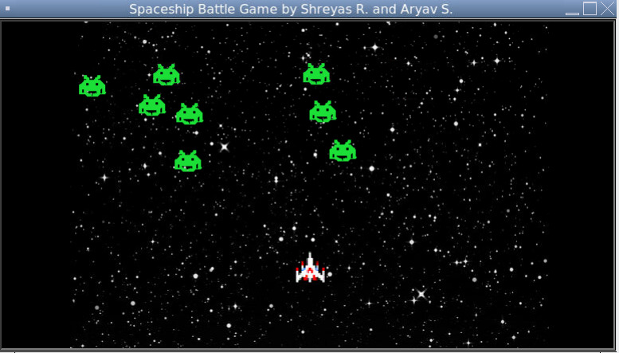
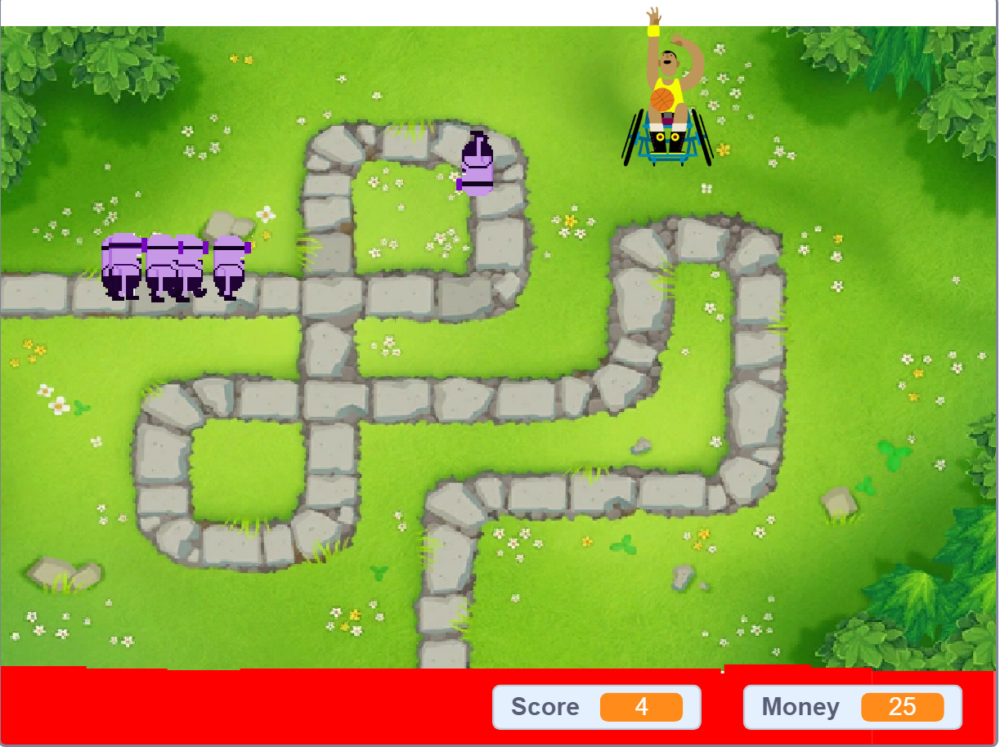

This is my Portfolio Page!
Project 1: Snake Game
Our game was a remake of the popular snake game, but with a couple modifications. My partner and I made the snake out of a bunch of small turtles, and whenever the snake ate the "apple", which just looked like a red dot, it would gain one more turtle and get longer. In our code, my partner and I introduced while loops and if statements to move the snake around and to make the snake become longer whenever it ate an apple. Also, we used certain turtle methods in order to end the game if the snake collided with the border or collided with its own body.
Project 2: Spaceship Battle Game

Our game was called Spaceship Battle. For this game, we used common Google images for the player (which is the spaceship) and the alien. First off, the game asks for a "username" from the player. The object of the game was to shoot the aliens before they reach you. If they reached you, the game was over and you lost. Also, the bullet that the spaceship fired was in the shape of a turtle. In our project, we introduced if statements, while loops, functions for parts of the game, lists, amd we also included event listeners so that the player could move the spaceship with the arrow keys and fire a bullet with the spacebar. We also displayed a "game over" screen if the player lost.
Project 3: Tower Defense Game

This game was made on Scratch. For this game, we used a background image and our sprites off of Scratch for the minions and tower. First, there is a menu screen where you can press the start button. Then, the game appears. You can see your score and money, and you are able to drag the tower anywhere on the screen. The object of the game is to prevent the minions from making it to the end of the path by throwing basketballs at them (which is what the towers do). If the minions make it to the end of the path, you lose, and a losing screen appears with a button that says "play again". If you press this button, you are prompted back to the game screen. Out of the 10 requirements, the seven that we fulfilled were events, scores (you get a point when you hit a minion), input, change of costumes (making the minions look like they are walking), multiple backgrounds (start, game, and end screens), animation (moving the minions along the path), and sound (when the minions are hit, there is a basketball sound).